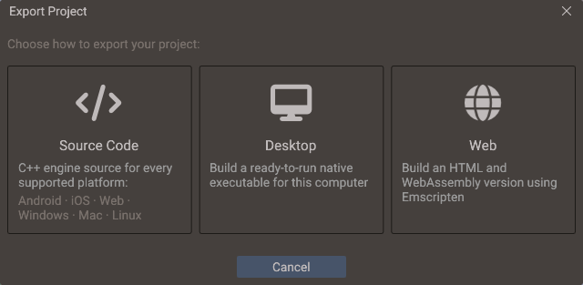
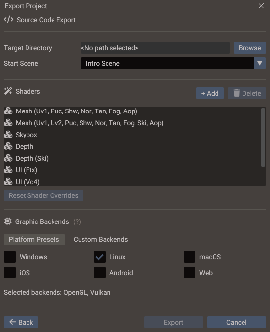
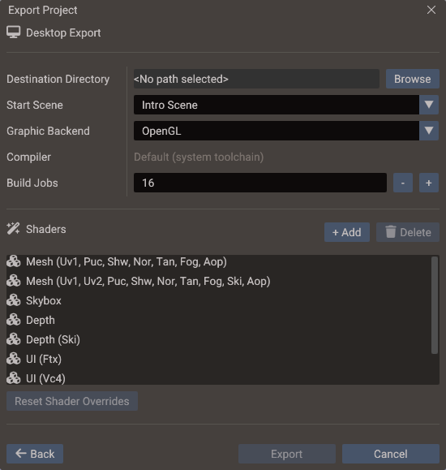

Export Window¶
The Export Window turns a Quantum project into something you can ship. It collects generated scene and bundle C++, resources, scripts, engine runtime files, and compiled shaders — and, depending on the mode, also compiles the result into a ready-to-run build.

From editor data to runtime code¶
The engine runtime is independent of the editor. Export generates C++ that uses the public runtime API; the resulting game builds and runs without the editor or its internal project model.
| Project input | Exported form |
|---|---|
.scene files |
C++ factory functions that create entities and configure their components |
.bundle files included in the build |
C++ factory functions for reusable entity hierarchies |
| User C++ scripts | Source files copied unchanged and compiled alongside generated code, with separate generated script bindings |
| Lua scripts | Runtime resources loaded by the engine's Lua binding |
| Textures, models, audio, and other assets | Runtime resources copied or packaged for the target |
| FBX models | Their glTF conversion, shipped as <name>.fbx.glb beside the FBX's path (see FBX models) |
Scene and bundle setup therefore runs as compiled code, without parsing the editor's YAML scene and bundle files at runtime. Lua and external assets remain resources; export does not convert them all into C++.
Source Code export lets you inspect and build this code with standard toolchains. Desktop and Web compile it into the final application. Editor Play mode has a separate build workflow; use export for distribution.
Asset directory contents
Files inside the assets directory ship as they are, except FBX models, which ship as
their glTF conversion. When that directory is left at
the project root, that includes the .scene, .bundle, and project.yaml files.
The game never reads them, so point the assets directory at a dedicated folder to
keep authoring files out of the build.
Opening the Export Window¶
Choose File → Export Project... from the menu bar, or press the Export button in the toolbar.
Export modes¶
The window opens with three modes to choose from:
| Mode | Output | Use it when |
|---|---|---|
| Source Code | A self-contained buildable C++ project (engine source included) for Android, iOS, Web, Windows, macOS, and Linux | You want full control of the build, target mobile platforms, or integrate with CI |
| Desktop | A ready-to-run native executable for the machine you are on (Linux, Windows, or macOS) | You want a playable desktop build without touching a compiler |
| Web | HTML + JavaScript + WebAssembly via Emscripten | You want a browser build without running emcmake yourself |
Selecting a mode opens its settings screen; the Back button returns to the mode selection.
Desktop and Web run the Source Code pipeline internally: they generate the full
project into a build cache inside your project (.quantum/export/desktop or
.quantum/export/web), compile it there, and copy only the final artifacts to your
chosen destination folder.
Common settings¶
All modes share these settings:
| Setting | Meaning |
|---|---|
| Target / Destination Directory | Where the output goes. Source Code requires an empty directory; Desktop and Web overwrite existing files in the destination |
| Start Scene | Scene loaded when the exported game launches |
| Shaders | The shader variants compiled into the build (pre-filled from your scenes; add or remove entries as needed) |
The output folder is remembered per project and per export mode, so switching from
Desktop to Source Code brings back the folder you last used for that mode rather than
overwriting one with the other. A project that has never been exported starts from the
Default Export Directory in Editor Settings, when one
is set. Both are machine-local: they live in the project's .quantum/user/build.yaml,
which is not committed, not in project.yaml.
Start Scene is the same setting as Project Settings → General; changing it here changes it for the project.
The assets and Lua folders that ship with the build come from Project Settings, not from this window: stored references are relative to those directories, so exporting a different one would break every path in the scenes.
The experimental Native Resource Pack choice also comes from Project Settings → Directories. It is off by default; see Native resource pack for its output and runtime restrictions.
Application identity and platform settings¶
The Export Window does not ask for the application's name, identifier, version or icons: those come from Project Settings, so every export mode and the command line produce the same identity. What the exporter writes with them depends on the target:
| Written into | From | Applies to |
|---|---|---|
Web page title, favicon, HTML shell, <head> include, and the game portal SDK |
Web settings | Web mode and Source Code |
.desktop launcher (Name, Comment, Categories) and app_icon.png |
Linux settings and the window icon | Linux builds from any mode |
Executable icon and VERSIONINFO resource (app_icon.rc) |
Windows settings and the window icon | Windows builds from any mode |
Info.plist, bundle identifier, AppIcon asset set, and on iOS the Google Mobile Ads frameworks and the StoreKit adapter |
macOS and iOS settings | Source Code exports (the generated Xcode workspaces) |
build.gradle (including the AdMob and Play Billing libraries), AndroidManifest.xml, strings.xml, styles.xml, launcher icons |
Android settings | Source Code exports (the generated Android Studio workspace) |
The executable and CMake target are still named after the project name, not the application name, so renaming the application does not rename the binary.
Shaders¶
The shader list is populated automatically from every saved scene, including a live scan of the currently open scenes — so a component added since the last save (for example a shadow-casting 2D light) is already accounted for. Each entry shows where it came from:
| Icon | Entry | Meaning |
|---|---|---|
| Cubes | Normal | Collected from the project scenes |
| Plus | Addition | Added by hand with Add |
| Trash | (Excluded), greyed out | Removed by hand, kept in the list so it can be restored |
Use Add if your game enables a feature only at runtime from scripts (say, turning on SSR) so its shaders ship too. Delete on a collected shader does not remove the row — it marks it (Excluded) and greys it out, so you can always see what a build is leaving out and why the list is shorter than the scenes suggest. Selecting an excluded entry turns the button into Restore, and Reset Shader Overrides clears every manual addition and exclusion at once.
Additions and exclusions are saved in project.yaml under export, and they are
shared by all three export modes — a shader you exclude for a Desktop test build is
excluded from the Source Code export too. Forked shaders are stored by their
project-relative path rather than by a session id, so the list survives reopening the
project.
Source Code mode¶
Exactly the classic export: choose the graphic backends to include (OpenGL, OpenGL ES 3, Direct3D 11, Metal for macOS and iOS, Vulkan) — this decides which shader formats are compiled in — and get a buildable CMake project in the target directory.

The source builds for every supported operating system regardless of this choice; only the shaders are affected, so include every backend the project may eventually be built with. See Shader compilation for which target needs which backend.
Choosing the backends¶
The Graphic Backends section has two tabs over the same selection:
| Tab | Use it to |
|---|---|
| Platform Presets | Tick the platforms you intend to ship — Windows, Linux, macOS, iOS, Android, Web — and let the editor select the backends each one needs |
| Custom Backends | Tick individual backends, with the shader language of each shown in its tooltip |
Switching tabs keeps the current selection, and the line under the tabs always spells out which backends the export will include. The two work together rather than overriding each other: a backend you tick by hand is kept even when a preset also covers it, and turning a platform off only clears the backends that preset added.
A project that has never configured this opens on Platform Presets with the platform
you are running on already ticked; once a selection is saved, the window reopens on
Custom Backends showing it. The selection is stored in project.yaml under
export.sourceCode.graphicBackends, so it travels with the project.
| Preset | Selects |
|---|---|
| Windows | OpenGL, Vulkan, Direct3D 11 |
| Linux | OpenGL, Vulkan |
| macOS | Metal (macOS), OpenGL |
| iOS | Metal (iOS) |
| Android | OpenGL ES 3 |
| Web | OpenGL ES 3 |
Generated output structure¶
output/
├── CMakeLists.txt ← build system entry point
├── quantum.py ← configure and build script
├── core/ libs/ platform/ renders/ workspaces/
│ ← engine runtime source (copied from the editor's SDK)
├── shaders/ ← compiled shader headers for the selected backends
└── project/
├── main.cpp ← generated startup entry point
├── *.cpp ← generated scene and bundle factory sources
├── assets/ ← contents of the project's assets directory
│ ← (or resources.pak only, when packing is enabled)
├── lua/ ← contents of the project's Lua directory
│ ← (empty directory kept when packing is enabled)
└── scripts/ ← your registered C++ scripts
Those three trees are filtered rather than mirrored, which matters when the assets and Lua
directories are left at their default <Project root> and all three come from the same
folder:
- C++ sources and headers only ever reach
scripts/, at their path relative to the project root — a script kept inscripts/CharacterController.cpptherefore exports asproject/scripts/scripts/CharacterController.cpp, which is the path the generatedscene_scripts.cppincludes it by. - Lua sources only reach
lua/, the rootlua://andrequireresolve against; they are not copied toassets/as well. A Lua file outside the Lua directory has no other home, so it still ships as an asset. - Data files a script may read through either prefix (
.json,.txt,.csv,.datand similar) are copied to both trees.
A folder appears in the export only when a file lands in it, so a folder holding nothing
but scripts leaves no empty directory behind. The exception is a packed Source Code
export, which keeps an empty project/lua/ directory for the generated Xcode workspace.
Build it afterwards with the appropriate platform toolchain, or
run python3 quantum.py in the export folder to configure and build it in one step. See
Build Script.
Native resource pack¶
Enable Project → Project Settings → Directories → Native Resource Pack to combine
the exported assets/ and lua/ trees into one resources.pak. This experimental,
project-wide option is intended for ready-to-run Desktop exports and Android builds
made from Source Code output. It has no effect on Web mode, which continues to
produce Emscripten's .data bundle.
The resulting layout depends on the export mode:
| Mode | Resource output when packing is enabled |
|---|---|
| Desktop | resources.pak beside the executable; loose assets/ and lua/ directories are removed |
| Source Code | project/assets/resources.pak; the loose contents are removed, while the empty project/lua/ directory is retained for generated Xcode workspace compatibility |
| Web | Unchanged; Emscripten emits its normal .data bundle |
The pack preserves the usual logical names. High-level loaders, Lua require(), script
entries, and Data::open() can read plain asset-relative paths, asset:// paths, and
lua:// paths transparently; external buffers and images referenced by GLTF models work
the same way. Absolute paths, data://, and other schemes continue to resolve outside
the pack. Editor Play mode is unaffected: it always reads the project's loose source
files.
Experimental limitations
Fileopens real filesystem files and cannot open a packed entry. UseData(or an engine resource loader) for read-only packaged resources. This also means each opened entry is read into memory rather than exposed as a streaming file handle.FileData.newFile()follows the same rule: a packed path returns an in-memoryDataobject even when a file handle was requested.- A pack must remain below 2 GiB. Export stops with an error if the combined header and resource data exceed that limit.
- Packing only obfuscates the bytes; it does not encrypt or securely protect shipped assets.
resources.pakandresources.pak.tmpare reserved, case-insensitive names at the top level of the configured assets directory. Rename any file or directory with either name before exporting, even when packing is disabled.
If you disable the option and export again, the exporter removes a stale pack and ships the loose resource directories again. Command-line exports honor the saved project setting; there is no separate CLI switch.
FBX models¶
A game never reads FBX. Export ships the glTF conversion of every FBX in the assets
directory beside it, as <name>.fbx.glb, and the engine loads that file wherever the
.fbx path is used. The .fbx itself is not exported. See
3D Graphics — FBX models.
Conversions that are missing or out of date, such as on a fresh clone or after an FBX or one of its textures changed, are made during the export, so a clean checkout exports without opening the editor first. Models in open scenes are reloaded before their scenes are saved for the export.
A scene that is not open keeps the model parts it was saved with, and only the editor can rebuild them for a changed file. Each scene therefore records which version of an FBX its models came from, and export stops when that no longer matches the file on disk: open the scene, let its models reload, save it, and export again. A changed texture does not count.
Export also stops when an FBX cannot be converted, or when an asset already has the path a
conversion ships as (hero.fbx.glb beside hero.fbx). A texture that a conversion links
but that is now missing is reported as a warning, and the model is exported without it.
Desktop mode¶
Builds a native executable for the operating system the editor is running on, using CMake and the compiler kit configured in Editor Settings (or the system default toolchain when none is selected).

| Setting | Meaning |
|---|---|
| Compiler | Read-only. Shows the kit this project builds with; change it in Edit → Editor Settings → Desktop |
| Build Jobs | How many compiler processes run in parallel. Shared with Play-mode script builds — see Parallel builds |
| Graphic Backend | The API the executable is built against, and the only shader format compiled |
Both the compiler and the job count are machine-local: they are stored per project in
.quantum/user/build.yaml, not in project.yaml, so a teammate on another machine keeps
their own toolchain.
Choose the Graphic Backend before exporting. The available choices follow the host operating system:
| Host | Backends |
|---|---|
| Linux | OpenGL (default), Vulkan |
| Windows | OpenGL (default), Vulkan, Direct3D 11 |
| macOS | Metal (default), OpenGL |
The exporter passes the selection to CMake and compiles only the shader format needed by that backend. Vulkan builds require the Vulkan development files or SDK to be available to the compiler. macOS has no Vulkan option because its only driver, MoltenVK, is missing an extension the renderer needs — see Vulkan backend.
The destination folder receives:
destination/
├── MyProject ← the executable (MyProject.exe on Windows)
├── assets/ ← runtime resources (default)
├── lua/ ← runtime Lua scripts (default)
├── resources.pak ← replaces assets/ and lua/ when packing is enabled
├── app_icon.png ← (Linux, with a project icon set)
└── MyProject.desktop ← (Linux launcher entry)
Run the executable from that folder — it resolves the loose assets/ and lua/
directories, or resources.pak, relative to its working directory.
Application icon¶
Set a project icon in Project Settings → Window → Icon (square PNG, 256×256 or larger recommended) and desktop exports use it automatically:
- Windows — embedded into the executable (Explorer, taskbar, and window icon), alongside the version resource built from the Windows settings.
- Linux (X11) — window and taskbar icon at runtime. Executable files on Linux
cannot carry icons, so the export also ships
app_icon.pngand a ready-made.desktoplauncher entry, whose name, comment and categories come from the Linux settings; install it withcp MyProject.desktop ~/.local/share/applications/to get the icon in menus and docks — and on Wayland, where windows only receive icons through that entry. - macOS — dock icon at runtime.
Apple bundles and Android launchers use their own icon settings on the Platforms tab instead, because they need asset catalogs and adaptive layers rather than a single PNG.
Requirements
Desktop mode needs CMake and a C++ compiler installed. The window warns you with
install instructions when either is missing. Point the window at your installs in
Edit → Editor Settings → Desktop if they are not on PATH. On macOS the Xcode
generator is not supported for this mode (it produces an app bundle instead of a
plain executable); use the default toolchain.
Web mode¶
Builds the project with Emscripten and copies MyProject.html, .js, .wasm, and
.data (the packed assets) to the destination. The Web graphic backend is fixed to
WebGL 2 (OpenGL ES 3).
The editor locates the Emscripten SDK automatically from the EMSDK environment
variable or emcmake on PATH. If neither is set, point at your emsdk folder once in
Edit → Editor Settings → Web — the path is remembered
across projects, and the dialog reports whether the SDK was found. The Export Window
shows the same status and warns before starting a build it cannot run.
The generated page is customized from the Web settings: page
title, favicon, an optional custom HTML shell, extra <head> markup, canvas resizing,
and hiding Emscripten's default UI. The Game Portal setting builds in the SDK of one
web game portal, for the WebPortal class; export
once per portal. See Monetization → Web portals.
Testing the build
Browsers do not load WebAssembly from file://. Serve the destination folder with
any local web server, for example:
See Building for HTML5 for Emscripten installation and advanced options such as thread support.
Build progress and cancellation¶
While exporting, the window shows each phase, a progress bar (driven by the compiler's own progress output during Desktop/Web builds), and the last build log line. The full log streams to the Output panel. Cancel stops the export and terminates the running compiler processes.
The build cache¶
Desktop and Web modes keep their generated project and CMake build tree inside your
project under .quantum/export/desktop and .quantum/export/web. The first export
compiles the whole engine and takes a while; subsequent exports only rebuild what
changed — typically just your scenes and scripts, finishing in seconds.
- Changing the graphics backend, compiler kit, generator, or Emscripten SDK wipes the cache's build tree automatically (CMake cannot switch these settings in place).
- The cache is safe to delete at any time; the next export simply starts from scratch.
- Keep
.quantum/out of version control.
Export phases¶
| Phase | Output |
|---|---|
| Scene factory generation | Generates a C++ factory function for each scene from its YAML |
| Bundle factory generation | Generates C++ factory functions for each bundle |
| Asset packaging | Copies and organizes resource files, ships FBX models as their glTF conversion, then optionally combines native assets and Lua files into resources.pak |
| Startup code generation | Generates main.cpp / entry point with scene registration |
| Engine template copy | Copies the runtime engine source and CMake/build files |
| Shader compilation | Translates shaders for the selected graphics backends |
| Configure & build (Desktop/Web) | Runs CMake and the compiler on the build cache |
| Collect artifacts (Desktop/Web) | Copies the executable or web files to the destination |
Generated scene data¶
Meshes backed by a model file keep their geometry in the exported asset and load it at
runtime. Terrain meshes with a configured heightmap also rebuild their runtime buffers
from TerrainComponent settings and the exported heightmap. Other meshes without a
runtime geometry source, including geometry created directly in the editor, embed their
vertex and index buffers in the generated scene or bundle C++ as read-only static data.
The scene factory copies those bytes into the runtime buffers without placing the full
geometry blob on the thread stack.
Generated factories also construct large fixed-capacity components, such as mesh, tilemap, and 3D physics body data, in temporary heap storage before inserting them into the ECS. This prevents those payloads from inflating the scene factory's stack frame.
Scene stacks¶
main.cpp gives every scene two functions and registers them together, as
SceneManager::registerScene(id, name, load_<name>, add_<name>, {start-active scene ids}).
Both begin the same way: for the scene and every child scene it involves, a new Scene()
registered with SceneManager::setScenePtr, the scene factory, then initScripts —
skipping any that already exist. load_<name>() goes on to call Engine::setScene and
Engine::addSceneLayer for the start-active scenes and to tear down every scene the new
stack does not involve; add_<name>() stops after creating, and
SceneManager::addChildScene
puts the scenes on screen. A scene is not torn down while a stack that involves it is
running, which is what keeps a stack a script adds from its init alive across the load.
Bundle instances¶
Each bundle becomes bundle_<name>.h and bundle_<name>.cpp with two entry points:
create_bundle_<name>(scene, root), the factory main.cpp registers with
BundleManager, and build_bundle_<name>(scene, root, members), the same factory
appending every entity it creates to members — its own entities first, then each
nested bundle's. A scene factory calls create_bundle_<name> for an instance nothing
else refers to, and build_bundle_<name> when it needs the members: per-instance
overrides, scene entities kept under a member, and component or script references into
the instance are emitted against that vector instead of an entity id, because member ids
are only assigned when the factory runs. Scene entities keep the ids they have in the
editor; bundle members do not.
Large inline meshes still increase the generated source size, executable size, and C++ compile time. Prefer a GLTF or OBJ asset for multi-megabyte geometry that does not need to be stored directly in the scene.
Shader compilation¶
The shader builder translates shader source per graphics API, never per operating system. Desktop mode compiles only the format its Graphic Backend selection needs, Web uses WebGL 2, and Source Code mode compiles one format per backend you ticked:
| Backend | Shader language | File suffix |
|---|---|---|
| OpenGL | GLSL 4.10 | glsl410 |
| OpenGL ES 3 | GLSL ES 3.00 (also WebGL 2) | glsl300es |
| Direct3D 11 | HLSL 5 | hlsl5 |
| Metal (macOS) | MSL 2.1 | msl21macos |
| Metal (iOS) | MSL 2.1 | msl21ios |
| Vulkan | SPIR-V 1.0 | spirv10 |
Metal is the one backend split by operating system, because the cross-compiler emits different MSL for macOS and iOS.
Choosing backends¶
The runtime loads only the format matching the backend it was compiled with, so pick the backends by how the exported source will be built:
| Target | Backends to include |
|---|---|
| Linux | OpenGL, Vulkan |
| Windows | OpenGL, Direct3D 11, Vulkan |
| macOS | Metal (macOS), OpenGL |
| iOS | Metal (iOS) |
| Android | OpenGL ES 3 |
| Web | OpenGL ES 3 |
This is exactly the mapping the Platform Presets tab applies, so ticking your target platforms there is the same as reading this table.
Including a backend you never build with only costs export time and file size. Leaving one
out that you do build with makes the game report the shaders as missing at startup, with
the quantum-editor shaders command needed to generate them.
If shader compilation fails, the Output panel reports the shader name, stage, backend, and the compiler error. Fix the shader source and re-export.
Custom (forked) shaders are compiled and shipped through this same pipeline, embedded into the build alongside the built-in ones. See Custom Shaders — Export and runtime.
Platform toolchains¶
Source Code exports are built afterwards with the appropriate native toolchain:
| Target platform | Toolchain | Notes |
|---|---|---|
| Windows | CMake + MSVC or MinGW | Requires CMake 3.16+, Windows SDK |
| Linux | CMake + GCC or Clang | Requires X11 or Wayland dev libraries |
| macOS | CMake + Xcode or CLang | Requires Xcode command-line tools |
| Android | Gradle + Android NDK | Requires Android Studio or SDK command-line tools |
| iOS | Xcode workspace | Requires a Mac with Xcode |
| HTML5 / Web | Emscripten | Requires emcmake cmake |
Desktop and Web modes run the Linux/Windows/macOS and Emscripten toolchains for you.
VSync in desktop exports¶
The project-level VSync option is written into exported desktop CMake projects.
With VSync disabled, Linux GLFW, Windows/Linux Sokol OpenGL, and Windows Direct3D 11
builds use swap interval 0. Vulkan builds prefer Immediate presentation, use Mailbox
when Immediate is unavailable, and fall back to the always-supported FIFO mode when
required by the driver or surface.
macOS Metal currently has no uncapped application-loop path in Quantum. Metal exports therefore remain synchronized and emit a CMake warning when project VSync is disabled. See Project Workflow — VSync for the full behavior table.
A minimized Windows, Linux, or macOS build stops drawing but keeps updating 60 times a
second, so scripts, physics, and sounds go on. On macOS this also applies to a window that
is fully covered or on another Space, and App Nap can make a silent game update less
often. Until the window comes back, onDraw is
skipped and gamepads are released and not read.
Window settings in desktop exports¶
The project-level Window settings (mode, size, resizable, title) are written into exported desktop CMake projects the same way. Linux GLFW builds honor all of them. Windows and macOS Sokol builds honor the size, title, and fullscreen mode, but have no maximized or non-resizable window support. Web, Android, and iOS exports ignore window settings entirely — the game always fills the browser canvas or the device screen. See Project Workflow — Window for the full behavior table.
Exporting from the command line¶
The Source Code pipeline is available headlessly through the quantum-editor CLI, which
is ideal for build servers and CI/CD:
See Command-Line Tools for the full export and shaders reference.
Build options¶
See Build Options for a full list of CMake flags and
compile-time defines you can set to control engine features in the export. Source Code
export also writes engine capacity macros (MAX_SUBMESHES, MAX_BONES, and others)
from the largest values used in your scenes and bundles — see
Engine capacity macros.
Tips¶
- Keep export destinations and the
.quantum/folder out of version control. - Test exported builds on actual devices — some graphics, input, and memory behaviors differ between the editor's desktop preview and the target platform.
- If a shader is reported missing at runtime, re-export (the scene shader list refreshes automatically) or add the named shader manually with Add in the Shaders section.